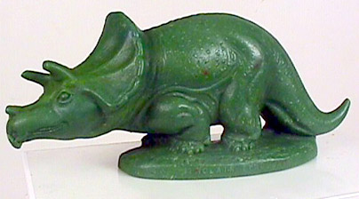
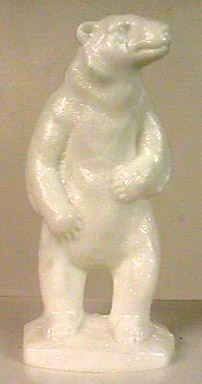
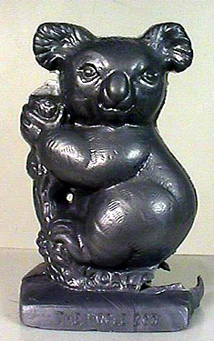
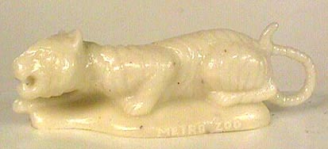
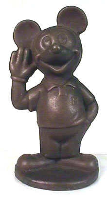

Location: 1964 World’s Fair, New York
Inscript: (not legible)
Color: Red
The dinosaur Mold-A-Ramas were from the Sinclair Oil-sponsored Paleontology exhibit.
(I don’t yet have a picture of Sinclair’s apatosaurus, but one should be coming)
|
|
|
Specimen: Tyrannosaurus Rex
Location: 1964 World’s Fair, New York Inscript: (not legible) Color: Red The dinosaur Mold-A-Ramas were from the Sinclair Oil-sponsored Paleontology exhibit. (I don’t yet have a picture of Sinclair’s apatosaurus, but one should be coming) |
|  | Specimen: Triceratops
Location: 1964 World’s Fair, New York Inscript: “Sinclair” (rest not legible) Color: Green This link goes to a brief history of Sinclair’s “Dino” mascot. |
|  | Specimen: Standing Polar Bear
Location: Brookfield Zoo, Chicago, IL Inscript: “Brookfield Zoo” Color: White I have not seen this mold at the zoo myself. It’s hard to tell from this picture, but the color may be a more off-white “polar bear” color. |
|  | Specimen: Silver Koala
Location: Hogle Zoo, Salt Lake City, Utah Inscript: “The Hogle Zoo” Color: Silver or Grey Dennis could not provide a date for this item. Can anyone confirm whether any machines are still operating at Hogle? |
|  | Specimen: Tiger
Location: (Dennis was uncertain, he only had the “Metro Zoo” inscription to go on. Could it be what's now called the Miami Metrozoo?) Inscript: “Metro Zoo” Color: White |
|  | Specimen: Mickey Mouse
Location: Unknown. I have images of a number of Disney figures in Mold-A-Rama form. As yet, whether machines were placed at Disney theme parks or licensed for general use is unknown. Moldaramaville has tracked a Jiminy Cricket figure to the American Pavilion at the 1967 World’s Fair in Montreal. Inscript: “Mickey Mouse” (front) (a “© Walt Disney Productions” was found on the rear of all Disney figures) Color: brown |